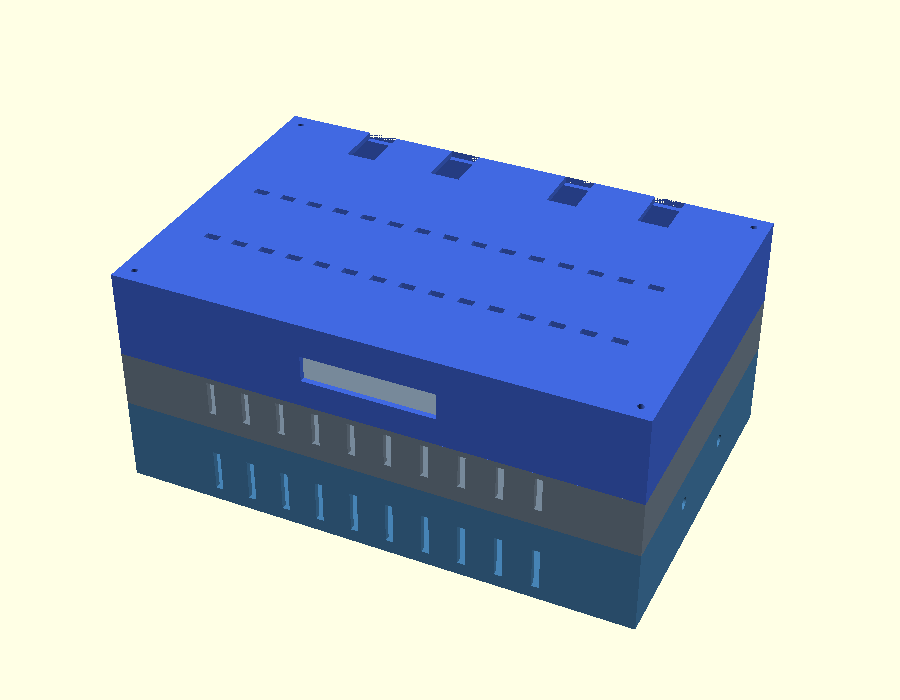

Silicon
Spyder
Secure event WiFi with real-time attack detection.
→
Silicon Spyder Live
Technician dashboard — live threat feed, stats, and detection legend
→
Spyder Protection
Attendee/vendor status page — you're protected, or here's what to do
→
Secure WiFi Box Build Guide
Architecture, parts list, wiring, enclosure, and phased build steps
→
4G HAT Install Guide
Visual step-by-step: mounting and powering on the SIM7600G-H, no SIM needed

→
Enclosure (.scad)
Parametric OpenSCAD source, 4 printable parts (base / fan chamber / fixed router top / detachable rear hatch) — opens in OpenSCAD (free)